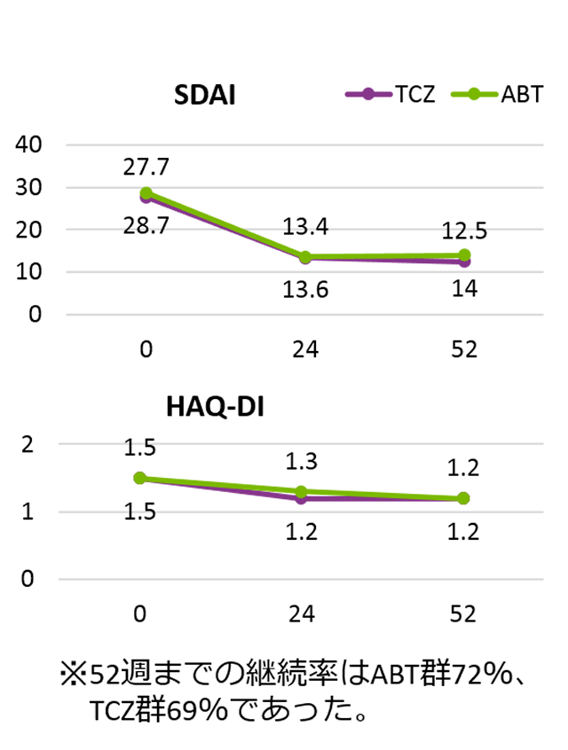

対オレンシア③有効性
産業医科大学のプロペンシティスコア（PS）マッチングの結果、ABTとTCZの継続率・有効性は同等であったという報告がある
- ●産業医科大学の実臨床下でABTもしくはTCZが投与されたRA患者の1年後の臨床結果を比較した
- ●ABT194名、TCZ273名をマッチングさせそれぞれ102名ずつ抽出し、SDAI・HAQ等を比較したところ同等であった
PSマッチング前
| ABT （n=194） |
TCZ （n=273） |
p-value | |
|---|---|---|---|
| 年齢(歳) | 63 | 59.2 | <0.05 |
| Bio使用歴(%) | 51 | 32.3 | <0.05 |
| MTX併用(％) | 70.1 | 59.3 | <0.05 |
| MMP-3（ng/mL） | 175.3 | 351.9 | <0.001 |
| CRP(mg/dL) | 1.5 | 3.4 | <0.001 |
| RF(U/mL) | 148 | 203 | <0.05 |
| SDAI | 26 | 32 | <0.001 |
| CDAI | 24.5 | 27.7 | 0.01 |
| DAS28-ESR | 5.3 | 5.8 | <0.001 |
PSマッチング後
| ABT （n=194） |
TCZ （n=273） |
p-value | |
|---|---|---|---|
| 年齢(歳) | 60.7 | 59.2 | 0.45 |
| Bio使用歴(%) | 54.9 | 59.8 | 0.57 |
| MTX併用(％) | 66.7 | 64.7 | 0.88 |
| MMP-3（ng/mL） | 236 | 205 | 0.21 |
| CRP(mg/dL) | 2.1 | 2 | 0.67 |
| RF(U/mL) | 166 | 177 | 0.82 |
| SDAI | 28.7 | 27.7 | 0.6 |
| CDAI | 26.6 | 25.8 | 0.63 |
| DAS28-ESR | 5.7 | 5.6 | 0.46 |

PSmatching前のTCZ群は、ABT群に比べMTX併用が少なく、MMP-3が高く関節破壊が進んでおり、疾患活動性も高い患者群であるが、Matching後はこのような重症例に使用した結果は反映されていない。